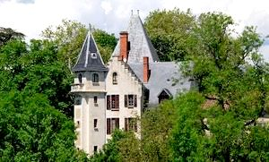
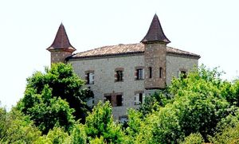
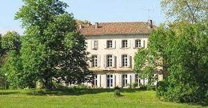
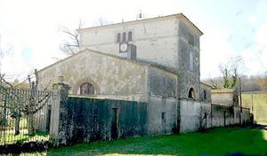
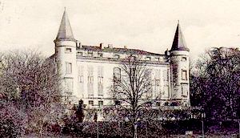
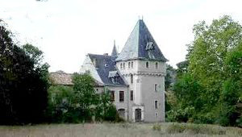
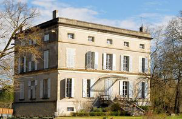
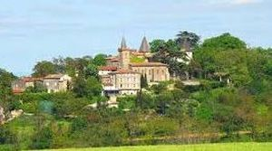
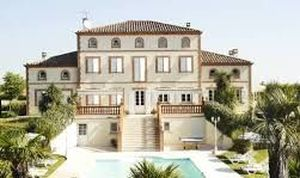

Recensement Jean-Claude Truffet
| Département | 81 — Tarn |
| Canton | Lavaur |
| Commune | Cuq-Toulza |
| Type d'édifice | Château |
| Période d'origine | XVI-XIX |









Quatre châteaux à Cuq-Toulza dont celui de Cuq-Toulza du XVIIe siècle flanqués de tours carrées, celui de Bonnac du XVI -XXe siècle avec tour néo-gothique, celui du Castelet du XIXe siècle à tourelle ronde et de Rogistan du XVII-XIXe siècle. CUQ-TOULZA, au mois de juillet 1623, conformément aux ordres du roi, le baron d'Amres se rendit à Cuq pour procéder "à la démolition et le nettoyage de cette place. Il employa pour cette opération 500 hommes de pied, la destruction fut totale et la ville ne se releva jamais de ses cendres. Les familles qui l'habitaient furent ruinées et certaines se réfugièrent dans les métairies qu'elles possédaient autour de la ville. BONNAC, situé à l'est du bourg, sur la rive droite du Girou, Bonnac fut forcé en 1625 par le maréchal de Thémines qui fit passer au fil de l'épée tous les défenseurs. CASTELET, a l'allure d'une robuste maison bourgeoise et est doté d'un rez-de-chaussée reposant sur un soubassement, d'un étage et d'un niveau en surcroît sur le toit. Sa façade de cinq travées n'a pas reçu d'autre animation que des chaînages de pierre aux angles et une élégante corniche. Le logis est couvert d'un toit à croupes couvert d'ardoise, le dernier niveau est éclairé par de grandes lucarnes. Le corps de logis principal est flanqué d'une fine tourelle cylindrique coiffée d'une poivrière. ROGISTAN de la famille de Lausun. VERNEDE, élevage de chevaux de sport, AA et SF, pension de chevaux. Autres châteaux ; Poumel, Montauquier, Massoulard et Scopan, pas d'information historique.
BONNAC, bâtiment composite accolé à un vieux corps de logis d'allure bourgeoise et couvert d'un toit en tuiles, se dresse un étrange manoir présentant peu de parenté avec l'architecture traditionnelle de la région. Un mur pignon s'appuie sur une tour polygonale coiffée d'un toit pointu en pavillon, de l'autre côté de ce corps de logis émerge un haut comble en pavillon. CUQ-TOULZA, le petit château qui a remplacé le vieux château de Cuq-Toulza fut construit à l'emplacement de ce dernier. Il consiste en un logis de bâtiment quadrangulaire dont les deux angles de l'un des côtés sont flanqués de tours carrées ayant conservé leur comble aigu en pavillon. La façade opposée présente en son milieu une autre tour à peu prés similaire, tandis qu'à l'une des extrémités de cette façade, une petite aile portant une échauguette a reçu à l'époque moderne un décor de créneaux, et malgré ses remaniements, le bâtiment conserve un certain nombre d'éléments datant de la reconstruction opérée au XVIIe siècle. ROGISTAN, demeure de plan classique, présente un corps de logis carré cantonné de quatre tours légèrement plus hautes et saillantes, formant pavillons. L'élévation principale à cinq travées comporte un rez-de-chaussée, un premier étage de grandes baies et un second présentant de petites fenêtres. Les tours ne présentent qu'une seule travée, mais un niveau supplémentaire de fenêtres, le château aurait été bâti dans la première moitié du XIXe siècle À moins que pour une raison difficilement compréhensible, on ait, au début du XIXe siècle, rebâti l'édifice sur le même plan et les vieilles bases. Ce domaine conserve également des communs et un pigeonnier intéressant.
Maréchal de Thémines Famille de Lausun
"
Château de Bonnac, du Castelet, de Rogistan, de Vernède, de Poumel, de Scopan, de Montauquier et de Massoulard à Cup-Toulza.